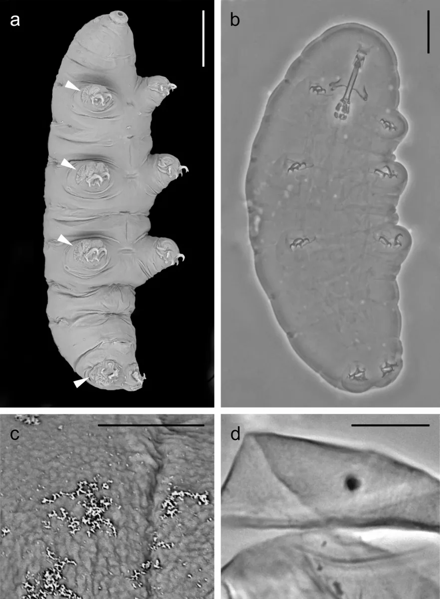

Half a millimeter long, eight legs, and it has survived boiling, freezing, deep-ocean pressure and outer space. Meet the toughest animal on Earth.
Tardigrades are less than a millimeter long, have eight stubby legs, and waddle around like something between a bear and a vacuum cleaner. Their nickname is "water bear," and they are the closest thing nature has to a superhero.
Here are seven reasons they are basically impossible to kill.
1. They have been to space
In 2007, scientists sent tardigrades into orbit and exposed them to the vacuum of space for ten days. Vacuum means no air at all. They came back, and most were completely fine. Some even reproduced afterwards.
They remain the only animals known to have survived unprotected in space.
2. They can dry out for years
When water runs out, a tardigrade curls into a dried-out ball called a tun (say: "tun"), pulls its legs in, and shuts its body almost all the way down. It is not quite dead — it is paused.
In this state it can survive around 30 years. Add one drop of water and it unfurls within hours, as if nothing happened.

3. They replace their water with sugar
Their secret ingredient is a sugar called trehalose. As a tardigrade dries out, trehalose steps in where water used to be, holding cells and DNA in shape so nothing cracks. When the water returns, the sugar swaps back out and the animal restarts.
It is one of the cleverest survival tricks in biology.
4. They can take the heat and the cold
Boiling water and temperatures near absolute zero: tardigrades have survived both. The exact limits depend on the species and how long the exposure lasts, but the range is far wider than almost any other animal can handle.
5. Crushing pressure does not bother them
They survive pressures six times greater than the deepest trenches of the ocean. A creature that lives in a drop of water on moss has survived conditions that would flatten a submarine.
6. They carry radiation-proof protein
Tardigrades make a protein called Dsup, short for "damage suppressor." It clamps onto their DNA and shields it from radiation damage. When scientists put the Dsup gene into human cells in the lab, those cells survived X-rays far better than normal.
Researchers still study Dsup today, because a protein that protects DNA could matter for medicine and space travel.
7. They are everywhere
Look at them under a microscope and they look cuddly, with claws and a slow, deliberate shuffle. You can find them in the moss on a wall, in a sample of wet dirt, or in the slime of a pond. They have been on every continent, on every kind of surface.
If you want to find one: soak a small pinch of moss in water for a day, then look at a drop under a microscope. Water bears are surprisingly easy to meet.
Sources: National Geographic Kids — Tardigrade · BBC Nature — Tardigrades: water bears in space · National Geographic — What is a tardigrade?